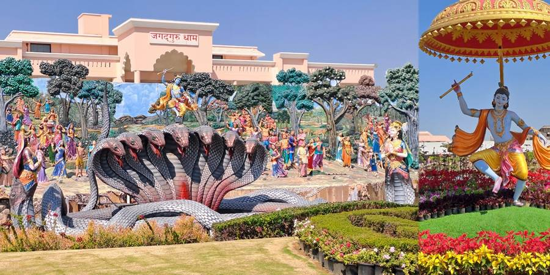
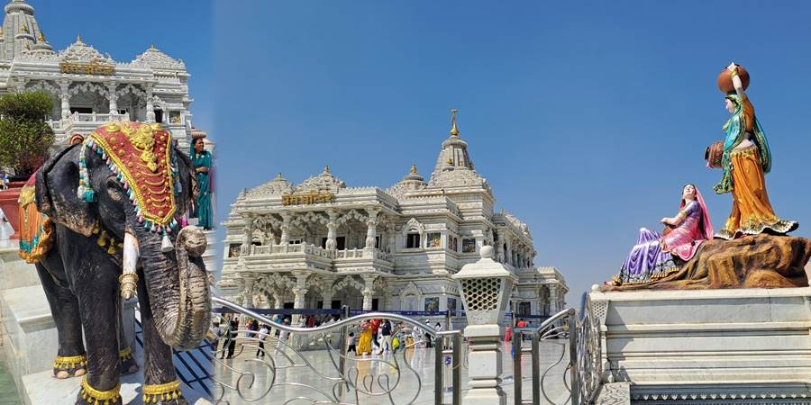
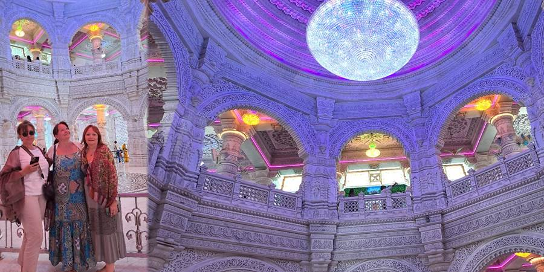
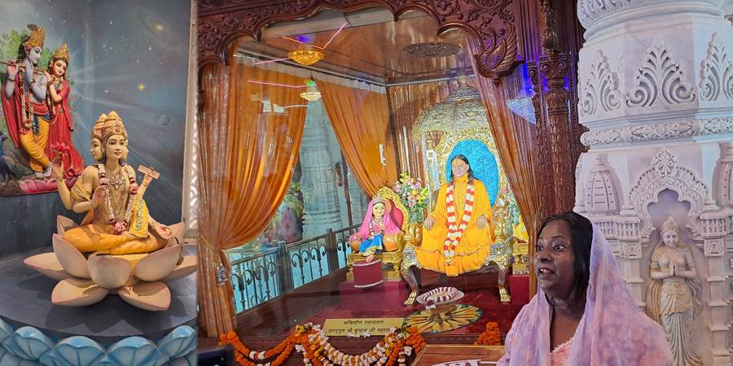
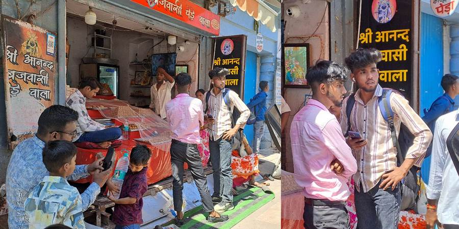
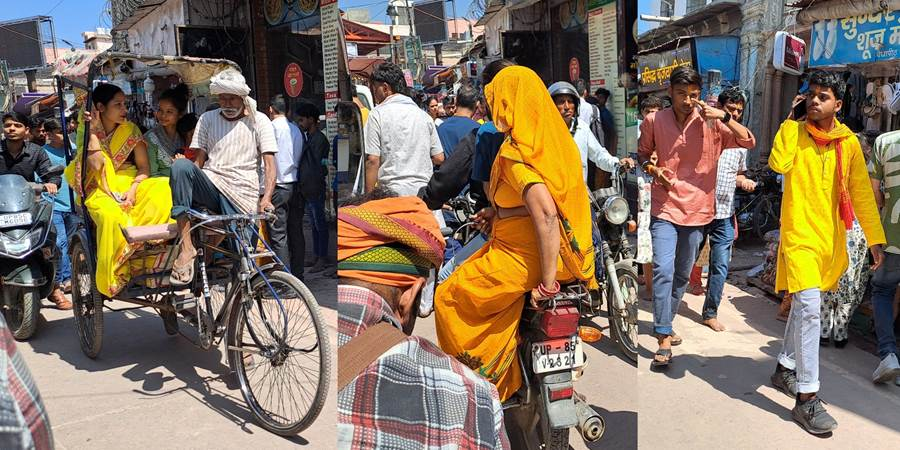
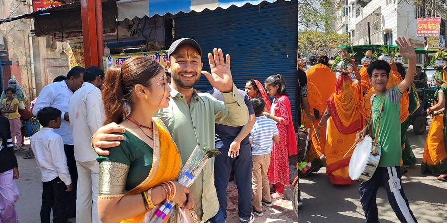
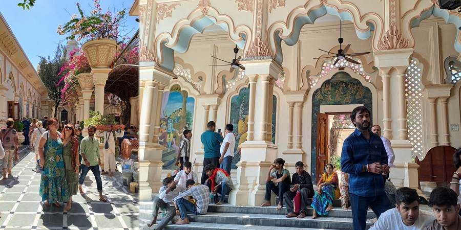
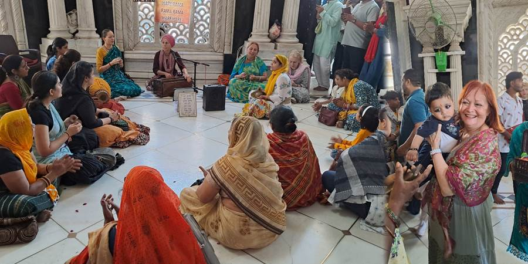
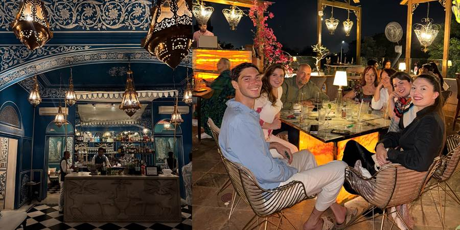

Deveti dan, Vrindavan: Od svetlih hramova Hare Krišne do živopisnih bazara Indije
Vrindavan je sasvim druga priča. Grad Hare Krišne. Vrlo kitnjast, beo, nov, šljašteći hram. Okolo statue ljudi u šarenim sarijima ili samo opasani oko struka. Figure paunova, kobri, slona. Kao neki šareni raj. Unutra ogromni kristalni ala svarovski luster. Još gomila figura. Taj jedan od glavnih bogova sa četiri lica... Deluje dosta kičasto ali interesantno. Hare Krišna je bio Bog, zavodio je devojke frulicom i vodio u šumu. Sve su se zaljubljivale u njega a onda se on zaljubio u običnu, skromnu devojku iz sela, Radu. Hare Krišna, Hare Rada, Hare-Hare svi govore i imaju neku vertikalnu oznaku na čelu iscrtanu celom dužinom čela do između očiju. Imaju i takav pečat, platiš pa te pečatiraju po ramenu. Nekad te pečatiraju u prolazu i kada ne platiš. Valjda je i to blagoslov. Tu je na ulicama baš gužva. Videla sam i velike statue Ganeše sa slonovskom glavom i onog sa majmunskom.




Na bazaru je baš gužva, uske ulice, tezge, prodaju koješta. Puno i ulične hrane upitne higijene. Nije baš ni upitna. Jedan majmun skoči od gore i ukrade čoveku naočare. Maja je komentarisala: „E, ovo je prava Indija!”. Mislim se, ni zagrebali. Još uvek smo mi u delovima za turiste gde sme da se ide. A kako je tamo odakle je Nikola došao crnih nogu kad je bio kod prijatelja, pa mu ja rekla, vodi i nas tamo, a on kaže da tamo nije za nas jer je previše prljavo i svuda trče pacovi.



Bili u još jednom vrlo fensi i novom hramu gde je muški bend svirao i pevao sedeći na podu. Sve idilično, poluotvoreno, zelenilo, muzika, novo, fensi. Trebalo je da padnu u trans i zaigraju, svi ruke gore ali nismo dočekali. Preko puta je bio deo gde su žene sedele u krug i pevale i imale onu harmoniku na otvaranje. Tu su Nataši tutnuli u naručje jednog malog dečaka čije su oči bile debelo iscrtane kreonom. Naravno, da se slika.


U autobusu nam Mina pevala na mikrofon. I mi sa njom. Između ostalog i Kneza: Da li si ikada mene volela.
Mina je doktor medicine, ima i svoje studente, radi na prenatalnoj genetici a vikendom kao fotograf. Pritom i slika, peva, igra. A kad je pogledaš, devojčurak. Baš smo konstatovali kako su svi u grupi ekstra a kakvi bi i bili, mladi ostvareni ljudi dok mogu sebi da finansiraju put, još i otvorenog srca dok putuju u Indiju.
Nastavak puta za Delhi i stigosmo kući. Takav smo svi osećaj imali. Vratili se u onaj isti hotel bez prozora koji je sad bio naš hotel, naša ulica, sve poznato. Šetkali poznatim ulicama. Uveče otišli u jedan prelep luksuzan restoran, maksimalno picnut, koji nam je Nikola preporučio. Gledali smo u neki minaret koji je znamenitost i avione kako preleću iznad njega. Lepo večerali, družili se. A vozila nas dva tuk tuka koja su nas čekala da završimo da nas i vrate. Naš se pokvario pa je cimao. Isto tako neko nedoba noću. A svi voze tek što se ne očeš, gurkaju se skoro u saobraćaju. A naš tuk tuk cima, samo smo gledali hoće li se ugasiti ili nekoga zveknuti kad cimne. Pritom je vozač imao suvozača koji je svaki čas pljuvao. Ako vetar promeni smer zalepiće nas. Zamolili ga da ne pljuje pa nije više. Al je tuk tuk i dalje cimao. I tako skoro sat vremena.
